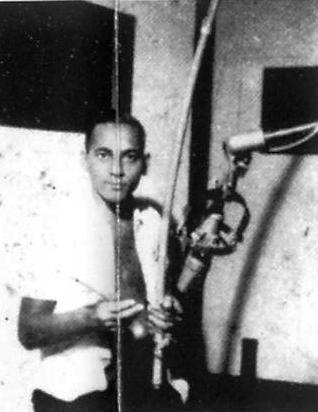

Беримбау в популярной музыке
В продолжение начатой темы о беримбау.
Беримбау в популярной музыке.
Помимо тесной связи с капоэйрой, беримбау уже давно используется в различных бразильских народных и популярных формах музыки, таких как samba de roda, carimbo, bossa nova, afro-samba и tropicalismo.Некоторые современные композиторы, такие как Mario Tavares (Gan Guzama), Luiz Augusto Rescala (Musica para Berimbau e Fita Magnetica) и Gaudencio Thiago de Mello (Chants for the Chief) также писали музыку для этого инструмента.
Беримбау пережил творческое возрождение в 1960-х годах вместе с бразильской поп-музыкой и последующим распространением этой музыки вне Бразилии. Позднее, в 1970-х годах беримбау начал появляться в международном джазе. Международное распространение капоэйры было явлением, которое способствовало увеличению известности беримбау. Однако это произошло уже после того, как инструмент уже начал набирать известность через популярную музыку. В результате развития Бразильской популярной музыки в 1960-х годах, беримбау стал международно известным инструментом вне контекста капоэйры.
Baden Powell и другие музыканты привлекли к беримбау внимание за пределами Бразилии песнями afro-samba, в которых имитировали звук и ритм беримбау на гитаре.

В 1962 году Wilson das Neves из самба-джаз группы «Os Ipanemas» использовал беримбау на одноименном дебютном альбоме.
Перкуссионист Dom um Romão использовал инструмент в треке „Birimbau (Capoeira)“ вместе с самба-джаз биг-бэндом на своем дебютном альбоме «Dom Um» в 1964 году.
В 1965 году Astrud Gilberto записала джазовую босса-нова версию «Berimbau» Powell'a (Dom um Romão на беримбау), для своего альбома „Look to the raibow“.
Gilberto Gil в 1968 году записал фундаментальный альбом стиля tropicalismo под названием Gilberto Gil), в котором использовал беримбау вместе с электрогитарами для трека «Domingo no Parque».
Также, в 1968 году, перкуссионист Naná Vasconcelos был показан на бразильском телевидении играющим на беримбау с группой Trio Nordeste.
Нетрадиционное звучание беримбау использовалось в необычной записи вокалистки Joyce отрывка из произведения Heitor Villa Lobos'а «Bachiana Nº 5». Эта запись была сделана для телефильма 1970 года Irmãos Coragem (выпущена на LP-саундтреке под тем же именем).
К 1970-му году беримбау прочно занял место в различной популярной музыке в Бразилии и Соединенных Штатах.
Несколько бразильских перкуссионистов, уехавших за рубеж, стали зачинателями процесса переосмысления роли беримбау, используя его вне капоэйры в джазе в 1970-е годы. Это привело к инновационным изменениям в технике игры и конструкции инструмента.
Airto Moreira, Dom um Romão, Guilherme Franco и Naná Vasconcelos (Juvenal de Hollanda Vasconcelos) открыли возможность использования беримбау в джазе. После этого Paulinho da Costa, Djalma Corrêa, Papete (José de Ribamar Vianna) и Chocolate Do Mercado Modelo привнесли беримбау в популярную музыку Бразилии.
Airto Moreira, уехавший из Бразилии в 1968 году, играл на беримбау на записях Майлза Дэвиса в 1969 году, в своем сольном альбоме 1970-го года и с группой Weather Report в 1971 году.Dom um Romão заменил Морейру в группе Weather Report и продолжал использовать беримбау во время японского тура в 1972 году. Впоследствии Romão разработал электрический беримбау, который значительно увеличил громкость инструмента и позволил изменять тембр звучания с помощью сигнальных процессоров.
Гильерме Франко (Guilherme Franco) использовал беримбау в составе экспериментального перкуссионного трио в Бразилии в 1972 году.После переезда в Нью-Йорк, он играл на беримбау в джазовых записях Арчи Шеппа и Маккой Тайнера вместе с «The International Percussion Quartet».
После выступления с беримбау на бразильском телевидении в 1968 году с Trio Nordeste, Naná Vasconcelos впервые записался с Milton Nascimento (в саундтреке к фильму Tostão, a fera de ouro), а затем с Luíz Eça and Sagrada Família, обе записи — 1970 год. Впоследствии играл на беримбау с Argentine Gato Barbieri в 1971 году. Сделал три успешных сольных записи в 1971-1973 в Аргентине, Франции и Бразилии, где записал расширенные импровизационные соло.
Позднее уже небразильские перкуссионисты продлили процесс переосмысления, играя на беримбау в джазе.Среди них два аргентинца: Luis Agudo и Onias Carmadelli (иногда упоминают, как Camardelli), Okay Temiz из Турции, афро-американец Bill Summers, американский джазовый барабанщик Shelly Manne, Ray Armando из Пуэрто-Рико, Curt Cress из Германии, Alan Lee из Австралии, и Marta Contreras из Франции.
Группа Codona — Nana Vasconselos на беримбау
Использование беримбау в джазе создало необычные условия для того, чтобы перкуссионисты с небольшим капоэйристическим опытом или вообще без опыта капоэйры могли свободно обмениваться идеями о технике игры на беримбау.
Luis Agudo переехал во Францию в 1970 году, где он спроектировал беримбау оригинальной конструкции со сдвоенным caxixi и экспериментировал с африканскими, бразильскими и аргентинскими ритмами.В то время турне по Европе, Агудо встретил Окая Темиза в Швеции в 1974 году и показал ему, как сделать беримбау.
К 1975 году Темиз разработал совершенно новый технический подход к беримбау, с применением многочисленных эффектов — педалей и микрофонов.
Также он придумал упор, освобождающий руки по прообразу скрипки: инструмент зажимался между подбородком и плечом, так, чтобы обе руки были свободны для игры.Аналогичный культурный обмен происходил через контакты между Naná Vasconcelos с перкуссионистами Италии и Японии.
В 1990 году Vasconcelos провел серию сольных концертов и семинаров в Японии и Италии. В результате общения с Vasconcelos, перкуссионисты Seichi Yamamura из Японии (иногда пишется как Seiti Yamamura) и Peppe Consolmagno (Giuseppe Consolmagno) из Италии начали играть на в манере, свойственной Vasconcelos, эффективно способствуя тем самым развитию и распространению беримбау.
Продолжение следует…. в следующей части описание новых конструкций и музыкальных приёмов.